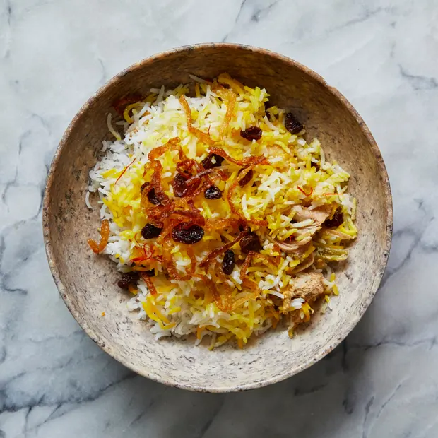

Dishoom's Chicken Biryani
Back home

A mixed dish of rice and chicken from the Indian subcontinent. This particular one uses a wide variety of spices and chicken to bring michilen star cooking to your home.
For the rice:
300g white basmati rice
2 tsp fine sea salt
Juice 1/2 lime
For the base:
500g skinless, boneless free-range chicken thighs each cut into 3 pieces
20g ginger paste
25 garlic paste
1 1/2 tsp deggi mirch
2 tsp fine sea salt
2 tsp ground cumin
1 1/2 tsp garam masala
2 tbsp lime juice
100g full-fat greek yogurt
2 tbsp vegetable oil
3 green chillies, each cut into 4 long strips
3cm fresh root ginger, cut into fine matchsticks
100g crispy fried onions (widely available)
6 large fresh mint leaves, chopped
5g fresh coriander leaves, chopped
For the topping:
20g unsalted butter
3 tbsp double cream
Large pinch of saffron, toasted in a dry pan, then mixed with 2tbsp boiling water.
35g dried cranberries
Raita to serve (optional)
How to cook:
- First, soak the rice – put it in a large bowl and cover generously with water. Using your fingers, gently move the rice around in the water to remove the starch, being careful not to break up the grains. Allow the rice to settle, then pour off the water. Repeat twice with fresh water, then cover with fresh water and soak for 45 minutes.
- For the base, put the chicken in a bowl. Mix all the remaining ingredients together, add to the chicken and turn to coat. Cover and put in the fridge to marinate.
- Heat the oven to 200°C/180°C fan/gas 6. Pour 2 litres boiling water into a large pan and add the salt and lime juice.
- Transfer the chicken and marinade to your biryani cooking pot or casserole and warm through over a low heat while you cook the rice.
- Drain the soaked rice, then tip into the boiling water and stir well. Boil for 4-5 minutes until three-quarters cooked. You can tell when it’s reached this stage by taking a grain between your forefinger and thumb and pressing down on it with your nail; it should still be slightly firm and break into 5 or 6 pieces. Drain the rice; you don’t need to shake it dry as a little extra moisture helps during cooking. Put it in the biryani pot/casserole on top of the chicken.
- In a small pan, warm the butter and cream for the topping until the butter melts. Mix together, then trickle it evenly over the rice, followed by the saffron mix. Scatter the cranberries over the top.
- Cover the biryani pot/casserole tightly with 2 layers of foil. Set over a high heat for 2-3 minutes until the foil puffs up and you see a little steam start to escape. Put the lid on, transfer to the oven and bake for 30-35 minutes. Let the biryani stand, still covered, for 10 minutes before serving with raita, if you like.
Back home